Caligrafia, tabuada e leitura com Provérbios, para a família inteira aprender junta, cada filho no seu nível.
Três livros ilustrados, 40 semanas planejadas, um versículo por semana. O pai abre a Bíblia uma vez, e o filho de 4 anos traça, o de 6 copia palavras, e o de 9 escreve o versículo de memória.
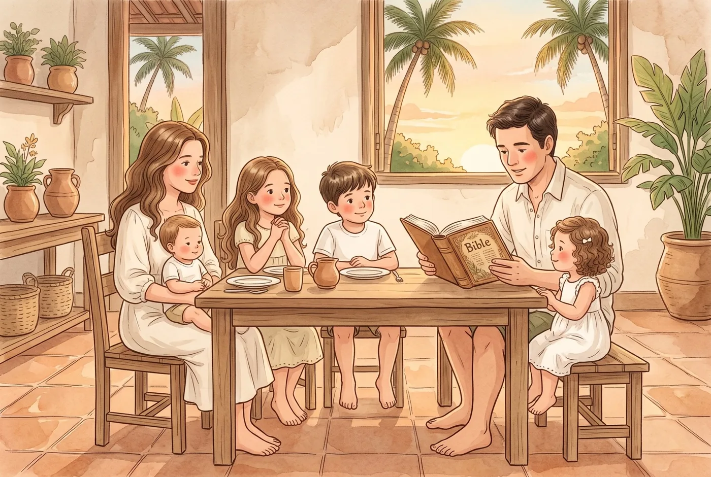
Sábado à noite. Um filho aprendendo a segurar o lápis, outro juntando as primeiras sílabas, o mais velho às voltas com a tabuada.
Três materiais, três planejamentos, e o culto doméstico de um lado, as matérias do outro. “Filho meu” nasceu do primeiro versículo em que Provérbios mostra um pai ensinando o filho, e da nossa própria mesa, com quatro filhos de idades diferentes. Queríamos a Palavra no centro da semana e cada criança aprendendo no seu passo, sem que a mãe ou o pai precisassem montar três aulas.
Todos juntos: a ilustração da semana, o versículo, uma conversa curta, perguntas para cada idade e oração.
A criança faz as páginas do seu nível nos três livros: caligrafia, tabuada e leitura.
A família recita o versículo. O filho maior escreve de memória. Na tabuada, o “Lembra?” e o desafio; na leitura, o registro de fluência.
Em 40 semanas, a família terá decorado 40 versículos de Provérbios, e cada filho terá dado um ano de passos na escrita, na matemática e na leitura.
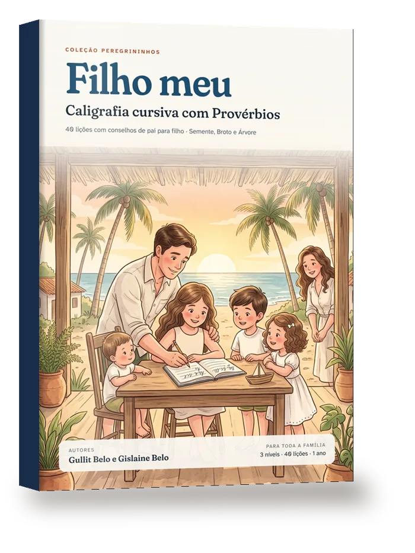
A letra cursiva do primeiro traço até a carta escrita à mão: traços, minúsculas, maiúsculas, números, palavras, frases, o versículo inteiro e, no fim, uma carta para o pai.
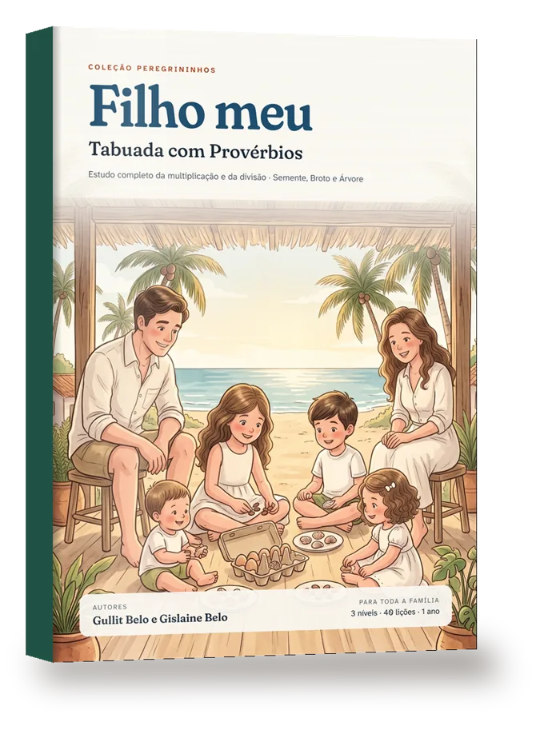
A multiplicação e a divisão entendidas antes de decoradas.
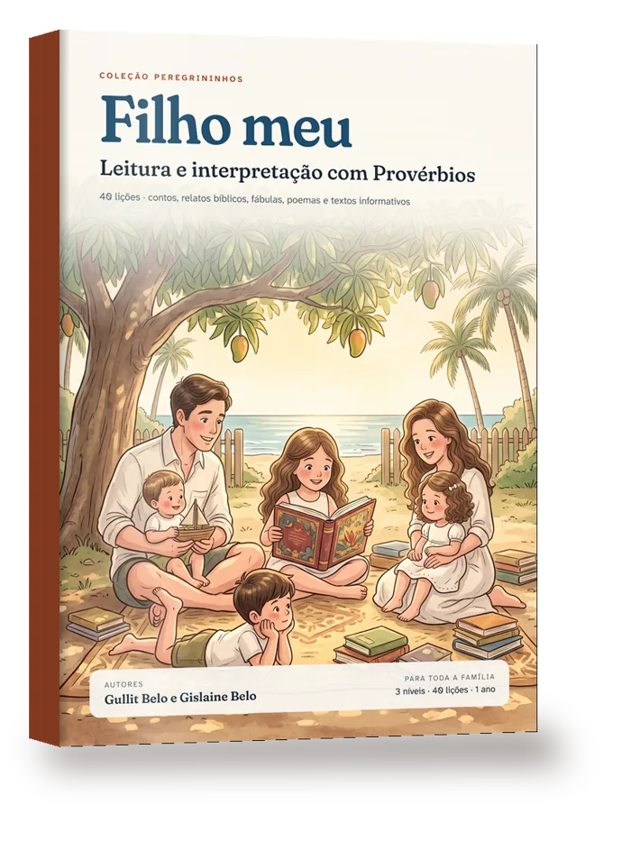
Oitenta textos originais para ler, reler e entender.
As idades são referência, não regra. Cada filho fica no nível em que está e pode mudar durante o ano.
Traços, letras grandes, contar com figuras, ouvir histórias e responder apontando e desenhando.
Letras cursivas e palavras, primeiras tabuadas com objetos e desenhos, textos curtos lidos três vezes.
Versículo inteiro, tabuadas completas e divisão, textos longos com interpretação e escrita.
Páginas reais da primeira lição, nos três livros.
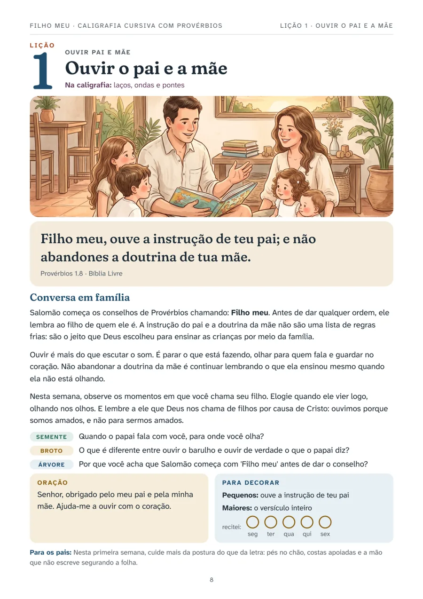
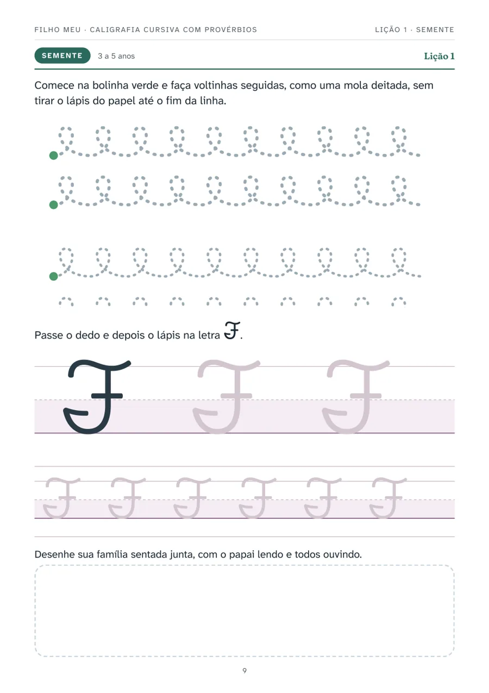
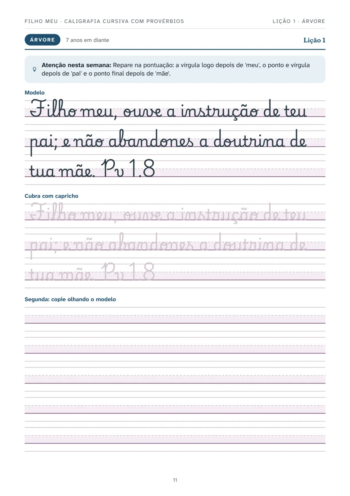
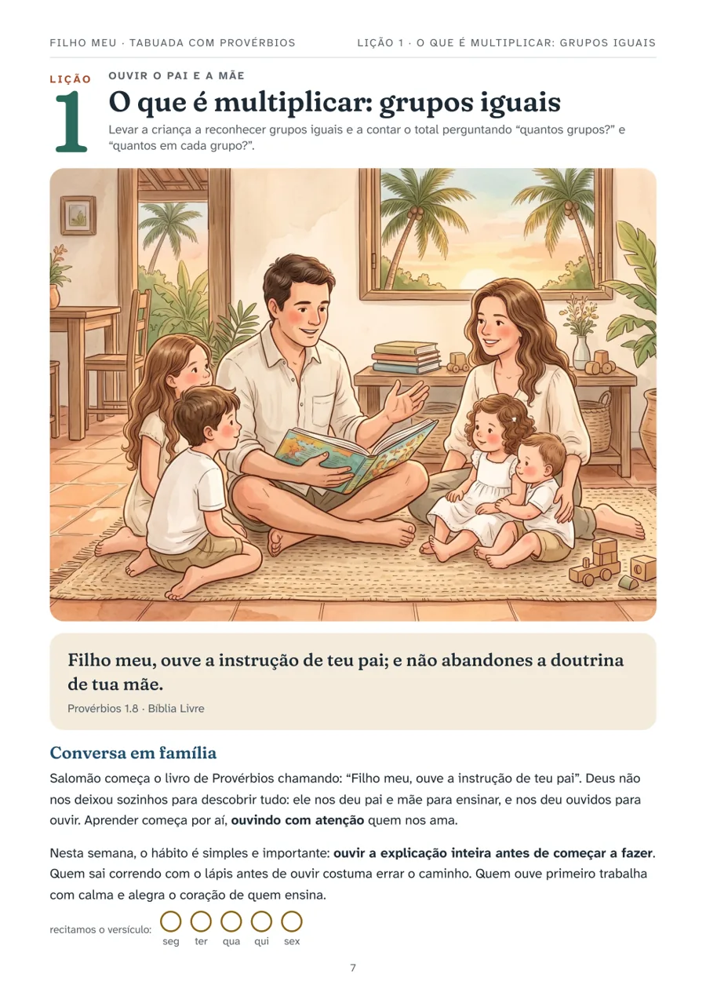
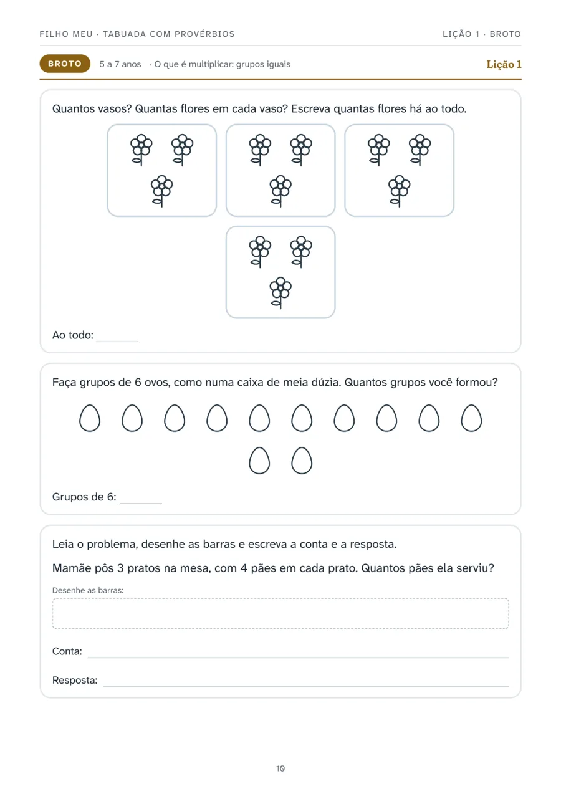
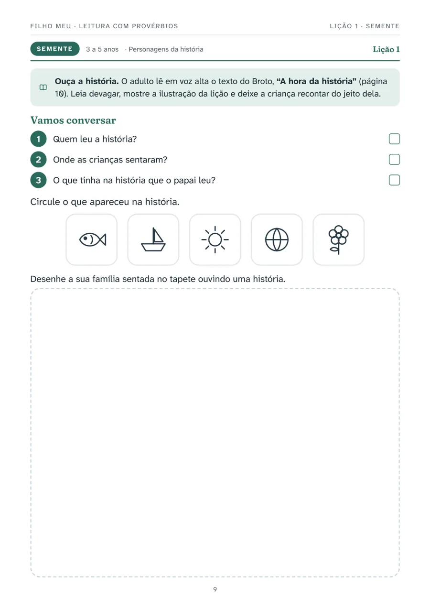
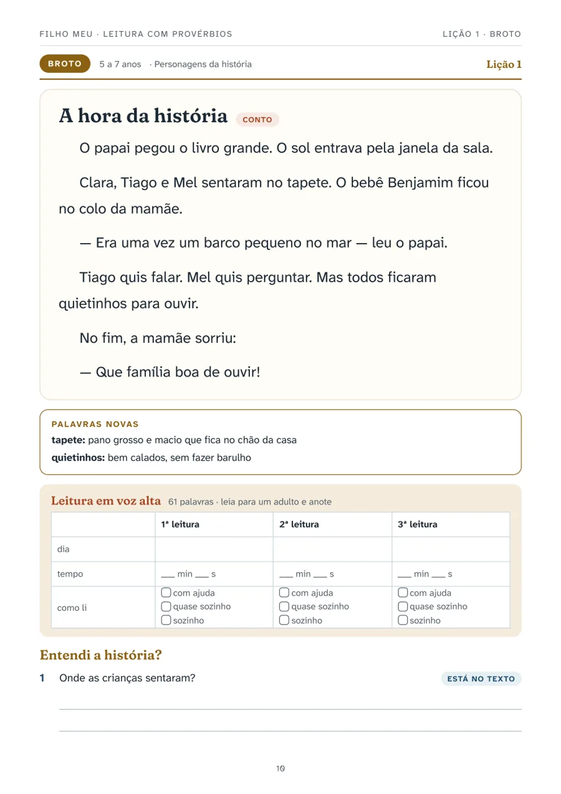
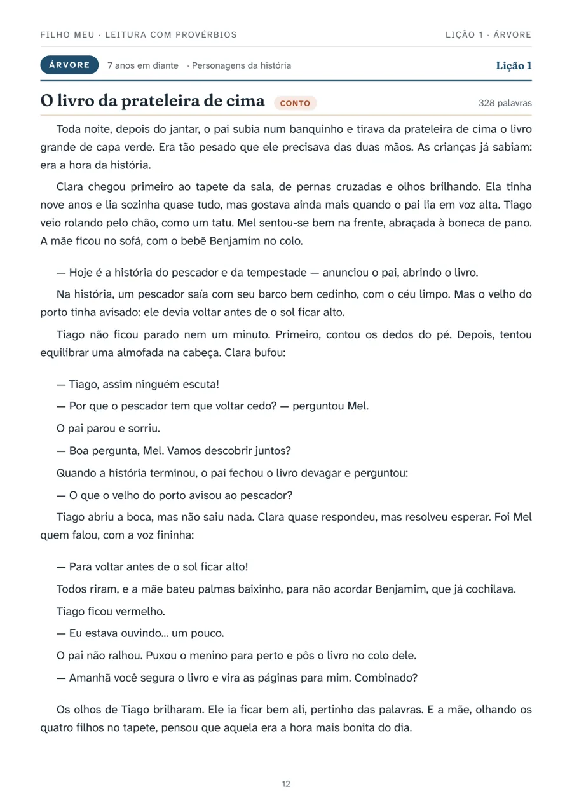
Não inventamos um método. Juntamos práticas com boa base em pesquisa e as colocamos a serviço da casa.
Rever em intervalos crescentes guarda por mais tempo do que repetir tudo no mesmo dia.
Ler o mesmo texto algumas vezes melhora a fluência, e a fluência ajuda a compreensão.
A sequência do ensino de matemática de Singapura faz a criança entender a conta antes de decorá-la.
“Está no texto”, “pense e procure” e “com suas palavras” ensinam a voltar ao texto e a pensar sobre ele.
O modelo vem primeiro, depois a cópia, e por fim a escrita sozinha.
Provérbios não é um manual de boas maneiras. É a voz de um pai que ensina o filho a temer ao Senhor, e o temor do Senhor é o princípio da sabedoria.
Por isso as conversas da semana apontam para Deus e para a graça, e não apenas para o comportamento. A coleção parte da fé reformada, com cuidado para não transformar cada lição numa lição de moral.
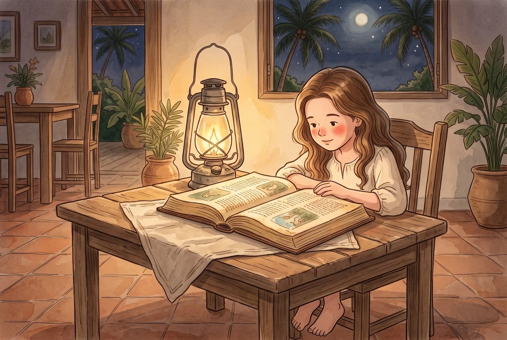
Gullit Belo e Gislaine Belo são casados e pais de quatro filhos. “Filho meu” nasceu na mesa da família, da necessidade de ensinar crianças de idades diferentes ao mesmo tempo sem deixar a Escritura de lado. Eles idealizaram e coordenaram o projeto da coleção.
A Editora Nadere Reformatie publica obras de fé reformada. O nome remete à Reforma Posterior holandesa, que buscou levar a doutrina da Reforma para a vida diária, a família e a piedade. “Filho meu” abre a Coleção Peregrininhos, dedicada à educação das crianças.
@editoranaderereformatie · www.editoranaderereformatie.com.br
Os três livros, 821 páginas, 40 semanas.
A família compradora pode imprimir as páginas de atividade para os próprios filhos, quantas vezes precisar, inclusive para os mais novos nos anos seguintes.
Quer o livro impresso? Mande uma mensagem no Instagram @mentoriagb; se houver procura, abrimos uma pré-venda.
Escolas e igrejas: há licença institucional. Fale conosco pelo mesmo Instagram.
Você tem 7 dias para conhecer o material. Se não for o que sua família precisa, peça o reembolso integral.
A coleção está sendo lançada agora, por isso ainda não há depoimentos. Para você conhecer na prática, a primeira semana completa dos três livros é grátis.
A lição 1 (Provérbios 1.8) dos três livros, nos três níveis. Imprima, use com seus filhos e decida com calma. Deixe seu nome e e-mail, e o PDF baixa na hora.
Se não abrir, clique aqui para baixar a Semana 1. Comece na segunda-feira, com a abertura em família.
Nesta primeira edição, os livros são em PDF. Você imprime em casa ou numa gráfica rápida, só as páginas que for usar. Se houver procura, pensamos numa edição impressa.
Pode, e recomendamos. A família que comprou pode imprimir as lições quantas vezes precisar: para cada filho, para refazer uma semana que ficou difícil ou para repetir uma lição depois de algum tempo e ver o quanto a criança avançou. Assim você acompanha o desenvolvimento de verdade, e não só se a página foi preenchida. Pedimos apenas que o arquivo não seja repassado nem impresso para outras famílias.
Vale, e muito. O mesmo material acompanha a criança por vários anos: ela começa no nível em que está hoje e, quando estiver pronta, passa para o seguinte, no mesmo livro. Uma criança de 4 anos pode fazer o Semente agora, o Broto depois e o Árvore mais adiante, sempre com os mesmos versículos, e você vê no próprio material o caminho que ela percorreu.
Serve. As lições são curtas e podem ser feitas em casa, em poucos minutos por dia, para firmar a letra cursiva, a tabuada e a leitura. Como não seguem um ano escolar específico, encaixam em qualquer época e acompanham o ritmo da criança.
De 3 anos em diante, em três níveis: Semente (3 a 5), Broto (5 a 7) e Árvore (7 em diante). A idade é só uma referência: coloque cada filho no nível em que ele está, e ele pode mudar de nível durante o ano.
Serve, se ele ainda precisa firmar a letra cursiva, a tabuada ou a fluência de leitura: o nível Árvore foi pensado para isso. Se ficar em dúvida, a Semana 1 grátis, logo acima, ajuda a decidir.
Não. Imprima só as páginas do nível de cada filho. As páginas de abertura podem ser lidas na tela, e o sumário mostra onde começa cada lição.
A abertura de segunda-feira leva cerca de 10 minutos. As atividades diárias levam de 15 a 30 minutos por criança, somando os três livros.
Não. Cada livro funciona sozinho. O kit vale a pena porque os três usam o mesmo versículo e, juntos, formam o trio básico de um ano.
Sim. Para turmas, oferecemos uma licença institucional, porque a licença familiar vale só para os filhos de quem comprou. Fale conosco pelo Instagram @mentoriagb.
Assim que o pagamento é confirmado, você recebe por e-mail o acesso aos arquivos em PDF. No Pix, a confirmação costuma ser imediata.
“Filho meu” não substitui o pai e a mãe. Foi feito para ajudar vocês a fazer o que Provérbios descreve: ensinar os filhos, com paciência, a cada dia, no caminho da sabedoria.